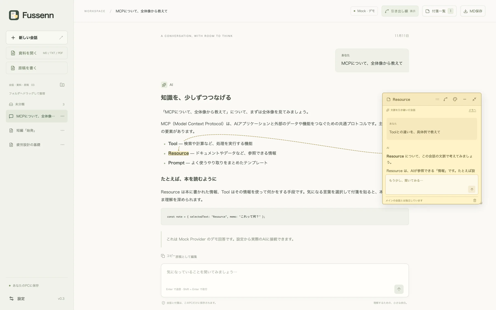
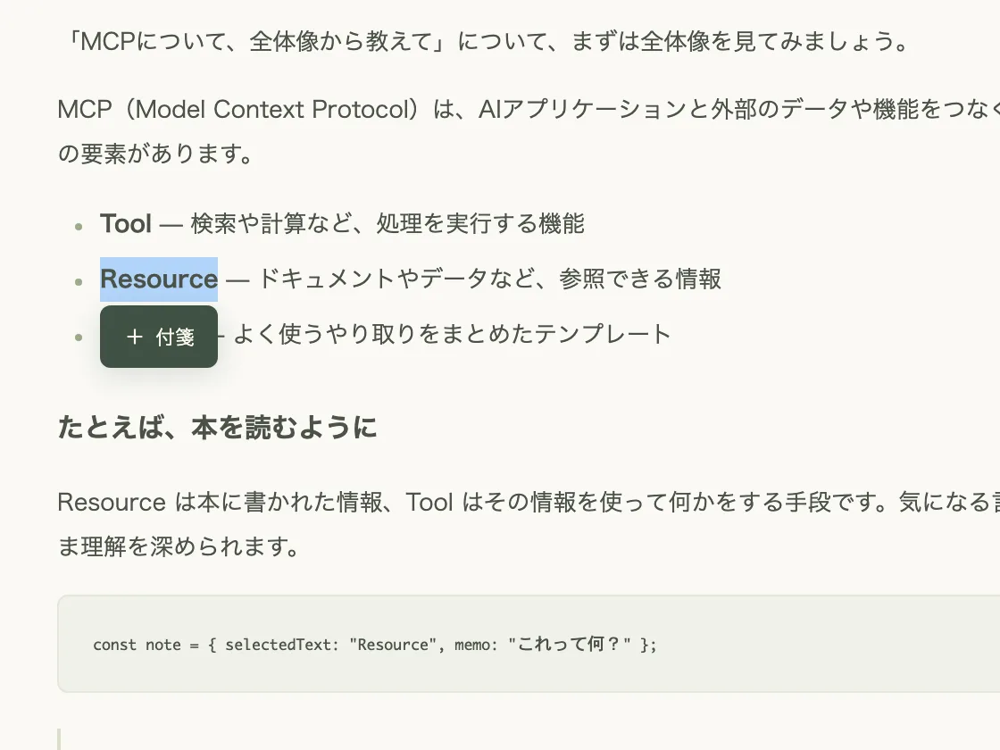
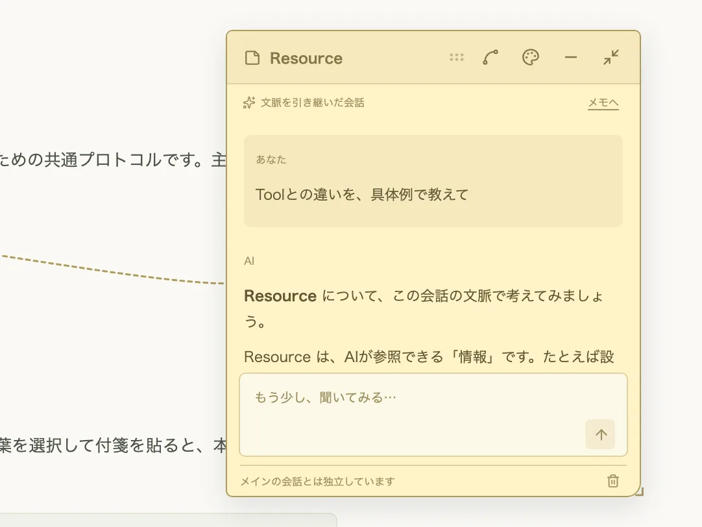
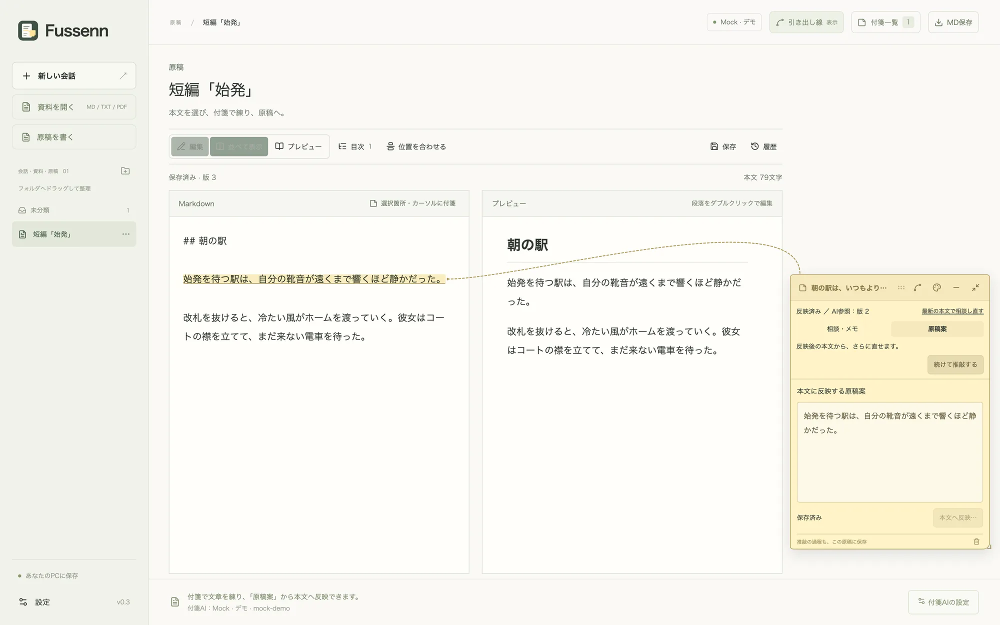

理解を、余白に。
Fussennは文章に付箋を貼って読み書きするアプリです。AIの回答や手元の資料で気になったところを選んで付箋を貼ると、その付箋の中でAIに質問できます。付箋の中のやり取りは元の会話には入りません。MacとWindowsで、無料で使えます。
Fussennは文章に付箋を貼って読み書きするアプリです。AIの回答や手元の資料で気になったところを選んで付箋を貼ると、その付箋の中でAIに質問できます。付箋の中のやり取りは元の会話には入りません。MacとWindowsで、無料で使えます。

回答の中で引っかかった言葉を選び、「付箋」を押します。付箋にはメモを書けます。「AIに聞く」を押すと、メモを質問としてAIに送ります。メモが空なら、選んだ文章の説明をAIに求めます。
付箋は5色から選べて、たたんだり、マーカーにしまったりできます。会話についた付箋は付箋一覧から探せます。


Markdownやテキスト、PDFの資料を取り込むと、本文に付箋を貼れます。PDFは文字を含むものに限り、スキャンした画像の文字は読み取りません。
付箋でAIに聞くときは、資料の全文と選んだ箇所をAIに渡します。取り込んだだけ、メモを書いただけでは、AIに何も送りません。
自分の原稿にも付箋を貼れます。付箋で練った案は、どこが変わるかを確かめてから本文に反映します。反映する前の版には履歴から戻せます。
原稿はMarkdownで書き、プレビューと並べて見られます。目次と文字数も出ます。

会話も資料も原稿もフォルダに分けて並べられます。付箋とのつながりを保ったまま、Obsidian向けのMarkdownに書き出すこともできます。
資料を読んで付箋にメモしたり、原稿を書いたりするだけなら、AIにつながなくても使えます。AIに質問するには、次のどれかを用意します。
~/.fussenn/desktop.env、Windowsでは %USERPROFILE%\.fussenn\desktop.env です。料金は使った分をOpenAIに払います。会話、資料、原稿、付箋は、どれもこのパソコンの中に保存します。クラウドへの同期も、利用状況の送信もしません。
AIに質問したときだけ、答えに必要な本文と会話を、選んだAIのサービスに送ります。送った内容の扱いはそのサービスの条件しだいです。
保存したデータもバックアップも暗号化はしていません。パソコンのアカウントで守ってください。バックアップは毎日自動で作り、最新の30件を残します。
{{release.label}}。無料です。
{{mac.file}}{{mac.size}}
Apple Silicon（M1以降）のMacで、macOS 13以降に対応しています。Intel Macでは動きません。Appleの公証を受けたアプリです。
{{mac.sha256}}
ターミナルで shasum -a 256 ~/Downloads/{{mac.file}} を実行し、同じ値になるかを見ます。
{{win.file}}{{win.size}}
Windows 10と11の64ビット版に対応しています。Windows版には発行元の署名がないため、開くときに警告が出ます。署名に使う証明書は毎年費用がかかるので、今は署名していません。
{{win.sha256}}
PowerShellで Get-FileHash $HOME\Downloads\{{win.file}} を実行し、同じ値になるかを見ます。
自動更新はありません。新しいバージョンが出たら、このページからダウンロードして入れ直してください。Macは「アプリケーション」フォルダのFussennを置き換え、Windowsはインストーラーをもう一度開きます。データはそのまま使えます。
Macは「アプリケーション」フォルダのFussennをゴミ箱に入れます。Windowsは「設定」の「アプリ」から削除します。保存したデータ（.fussenn フォルダ）は残ります。このフォルダには自動バックアップも入っています。要らなければ、残したいバックアップを別の場所に移してから消してください。
これまでのバージョンはGitHubのリリースに、変わったところは変更履歴にあります。
無料です。ソースコードもMITライセンスで公開しています。AIの料金は使うサービスの条件によります。
ChatGPTのアカウントかOpenAIのAPIキー、またはOpenAI互換のサーバーが要ります。ChatGPTのアカウントで使うときは、Codex CLIも要ります。くわしくは「AIとのつなぎ方」にあります。AIにつながなくても、資料を読んだり原稿を書いたりはできます。
設定画面の「バックアップを保存」で1つのファイルに書き出し、移した先のパソコンで「バックアップから復元」を選びます。AIの接続は移した先で設定し直してください。
今は配っていません。ソースコードから組み立てる手順はGitHubの説明にあります。
使えません。パソコン用のアプリです。
GitHubのIssuesに書いてください。セキュリティの問題は公開のIssueに書かず、セキュリティポリシーにある方法で知らせてください。